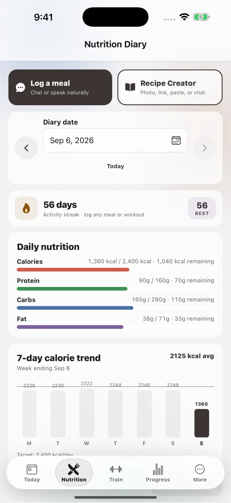
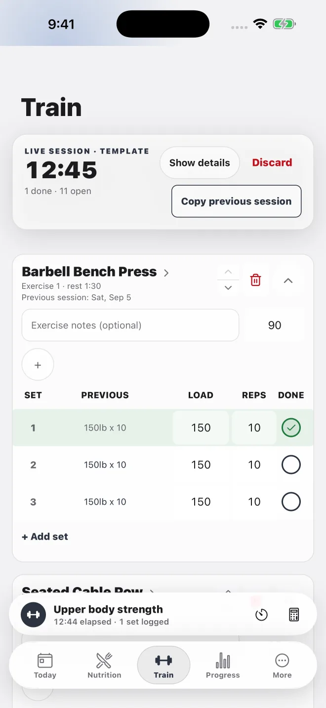
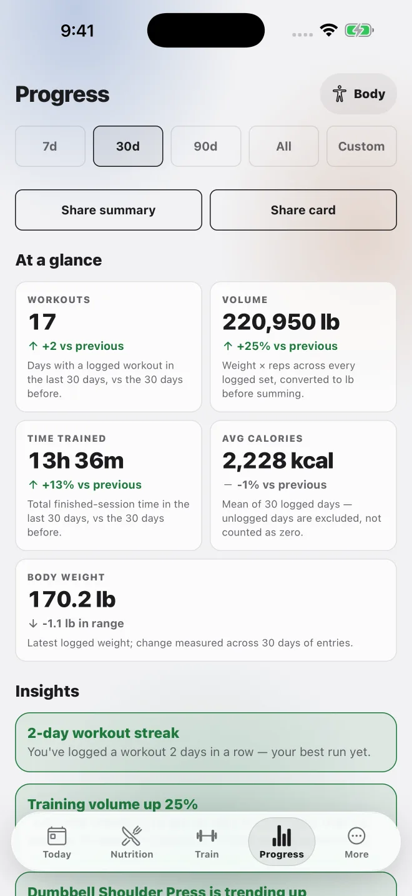
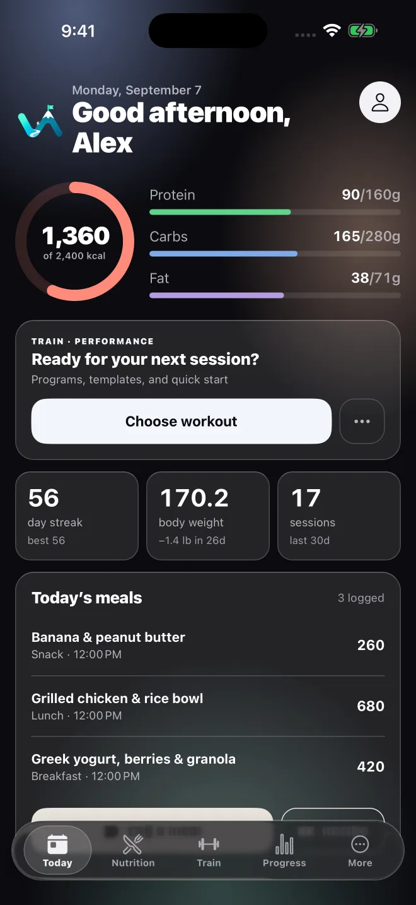
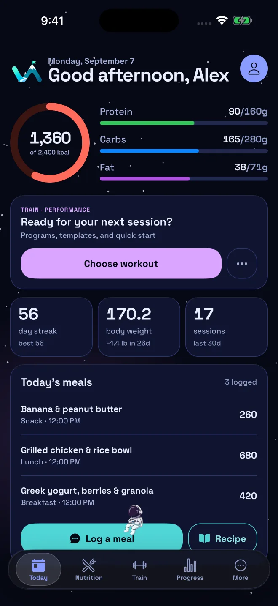
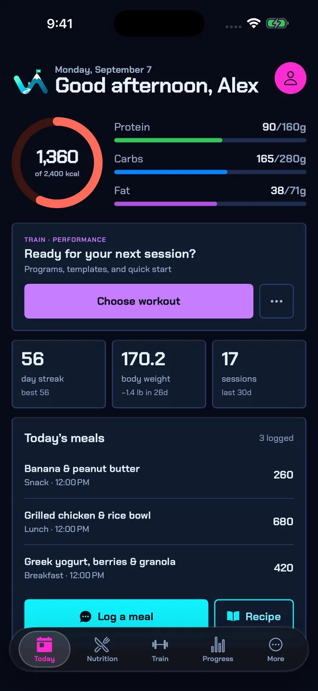

iPhone
The complete daily companion, with focused phone layouts and native navigation.
One app, one record
Vantage connects daily logging with the longer view, without requiring a social profile or a network connection for the basics.
Nutrition
Describe a meal by voice or text, scan a packaged food, repeat a saved meal, or create a recipe from a photo, link, paste, or chat.

Training
Start from a program, template, or quick workout. Previous performance, set targets, notes, plate math, rest timing, and exercise detail remain close.

Progress
Compare time ranges across workouts, volume, time trained, calorie intake, body weight, and individual exercise performance.

Made for Apple devices
Vantage adapts the same data and actions to iPhone, iPad, and Apple Watch.
The complete daily companion, with focused phone layouts and native navigation.
Two-pane dashboards, wider charts, adaptive grids, and a live-workout sidebar.
Start and log workouts, follow rest, see the diary, use saved meals, and dictate a meal.
Looks like yours
The app’s theme changes color, type, shape, icon treatment, and backdrop—not just the accent.


